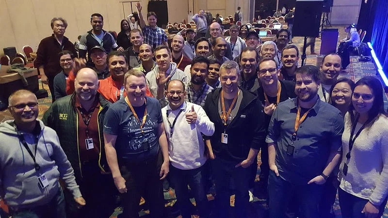

AWS re:Invent 2018 — ENT321 — Amazon SageMaker workshop
Here are the slides and notebooks for my SageMaker workshop at re:Invent. Huge thanks to to the attendees and support staff. It was an honour and a pleasure to build this for all of you.

Slides
Notebooks
Happy to answer questions. Please follow me on Twitter for more content.